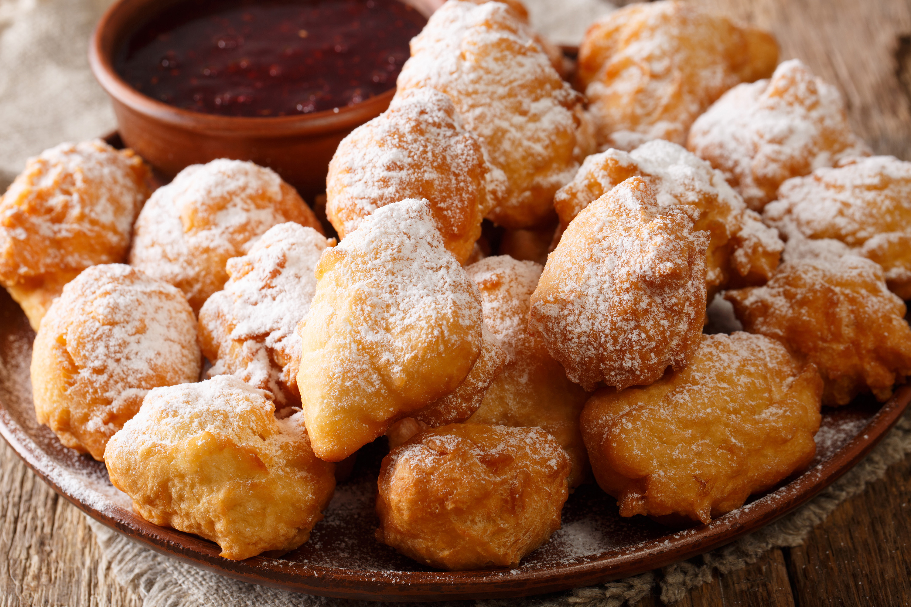

Petulla: A Lost Art Form

Ingredients
- Flour
- Milk
- Eggs
- Indestructible Will
- Baking Soda
Steps
- Reflect on the decision that led you here!
- Get the ingredients ready.
- Make the petulla!
Credits to this Recipe
Hey guys, so I was gonna write the credits here but actually in a really tough financial situation
right now and I just wanted to- Holy moly is that Stan Getz playing in my spotify
right now?? I think I'm feeling better. You know what, have this image...
You hear a whoosh sound. Suddenly this appears in front of you: